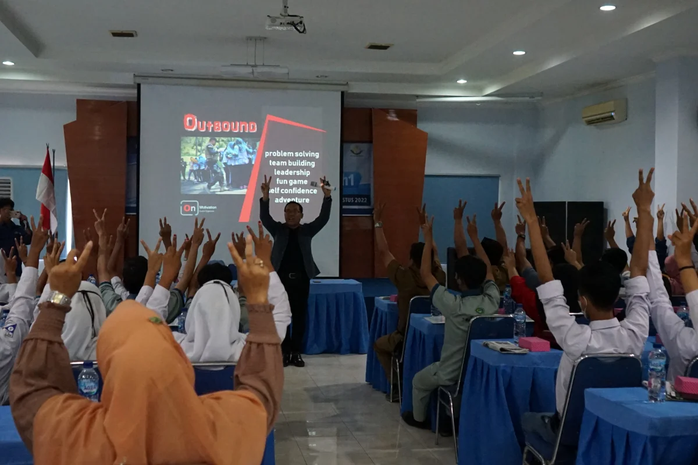

Paket Outbound & Team Building
Aktivitas luar ruangan yang menyenangkan dan menantang untuk membangun kerja sama tim, kepemimpinan, dan penyelesaian masalah bagi siswa, guru, maupun karyawan perusahaan.

Program Outbound & Team Building
Program Outbound & Team Building adalah kegiatan luar ruangan yang dirancang khusus untuk membangun kerja sama, memperkuat kepemimpinan, dan meningkatkan keterampilan sosial melalui serangkaian aktivitas fisik dan permainan interaktif. Melalui pendekatan experiential learning, peserta ditantang untuk berpikir kreatif dan memecahkan masalah (problem solving) secara bersama-sama dalam suasana yang menyenangkan.
Bagi lingkungan sekolah, outbound sangat efektif untuk membangun karakter seperti kepercayaan diri, keberanian, dan empati. Program ini juga mampu mencairkan suasana dan mempererat ikatan kekompakan antar-siswa, maupun antara siswa dengan guru, sehingga menciptakan lingkungan belajar yang jauh lebih positif.
Sedangkan bagi perusahaan atau instansi, aktivitas outbound menjadi sarana yang sangat baik untuk meningkatkan motivasi karyawan, melepas stres kerja, dan menciptakan semangat kolaborasi yang baru. Manajemen perusahaan juga dapat memanfaatkan momentum ini untuk mengidentifikasi potensi kepemimpinan dan keterampilan individu yang tersembunyi di dalam tim.
Manfaat Program
- Melatih kerja sama, komunikasi efektif, dan kekompakan tim secara natural
- Membangun karakter tangguh, kepercayaan diri, keberanian, dan kepemimpinan
- Meningkatkan kemampuan memecahkan masalah (problem solving) di bawah tekanan
- Mempererat ikatan emosional (bonding) antar anggota sekolah maupun karyawan
- Menciptakan suasana kerja atau belajar yang lebih positif, segar, dan termotivasi
- Membantu manajemen/guru memetakan potensi kepemimpinan individu peserta
Susunan Acara (contoh untuk 1 hari)
Kedatangan & Briefing
Peserta tiba di lokasi, registrasi, dan pengarahan awal keselamatan
Ice Breaking & Grouping
Pemanasan, permainan pencair suasana, dan pembagian kelompok tim
Sesi 1: Fun Games & Trust Building
Permainan ringan untuk membangun komunikasi dan rasa saling percaya
Coffee Break
Istirahat sejenak
Sesi 2: Team Challenge & Problem Solving
Tantangan kelompok yang membutuhkan strategi, kepemimpinan, dan eksekusi tim
Ishoma
Istirahat, sholat, dan makan siang bersama
Sesi 3: Final Project / Synergy Game
Permainan puncak yang menggabungkan seluruh tim dalam satu tujuan besar
De-briefing, Evaluasi & Penutupan
Refleksi makna dari setiap permainan, dokumentasi, dan penutupan acara
Event Gallery
Dokumentasi aktivitas Outbound & Team Building bersama Radar Kediri Institute — membangun kekompakan melalui keceriaan dan tantangan alam terbuka.
{kind=link}
{kind=link}
{kind=link}
Event Organizer

Divisi Marketing JPRK
Event Organizer Radar Kediri
Info lebih lengkap, silakan hubungi:
officialrkinstitute@gmail.com
+62 831-9800-2246
Venue Kegiatan
Kegiatan dapat dilaksanakan di kawasan wisata alam, camping ground, atau lapangan terbuka yang mendukung aktivitas fisik secara aman.
Venue Outdoor & Alam Terbuka

Kami memiliki jaringan kemitraan dengan berbagai penyedia venue alam terbuka yang representatif, aman, dan memiliki fasilitas pendukung lengkap. Pemilihan lokasi akan disesuaikan dengan tema kegiatan, durasi (1 hari atau menginap), dan anggaran institusi Anda.
Fasilitas Program
- Master Outbound & Fasilitator tersertifikasi
- Peralatan fun games dan team building standar
- Sound system pendukung di lapangan
- Dokumentasi foto dan video kegiatan
- Perlengkapan medis / P3K standar
- Konsumsi dan venue sesuai kesepakatan
Basecamp Organizer
Radar Kediri Institute (Titik koordinasi persiapan kegiatan)
Pertanyaan Sering Diajukan
Temukan jawaban atas pertanyaan umum seputar program Outbound & Team Building di Radar Kediri Institute.